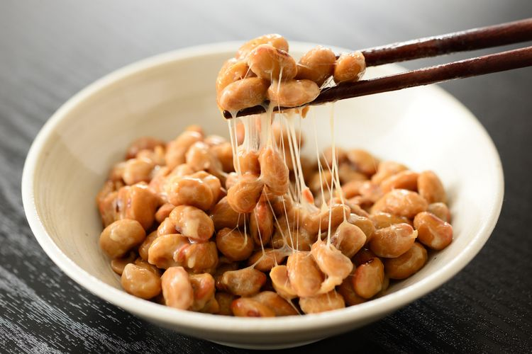

Nattō is an unusual Japanese dish consisting of fermented soybeans. The process of fermenting is time-consuming, but rather simple since it employs merely soaked soybeans and the bacterium Bacillus subtilis, known in Japan as nattō-kin.
Meal prep time : 10 minutes
Servings : 4